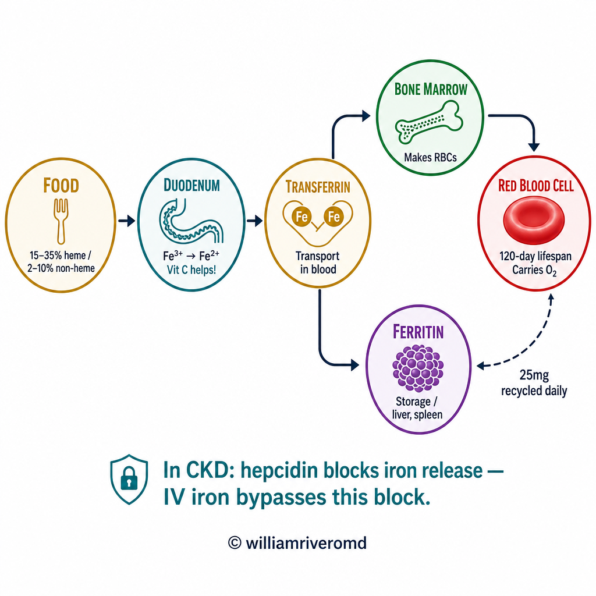
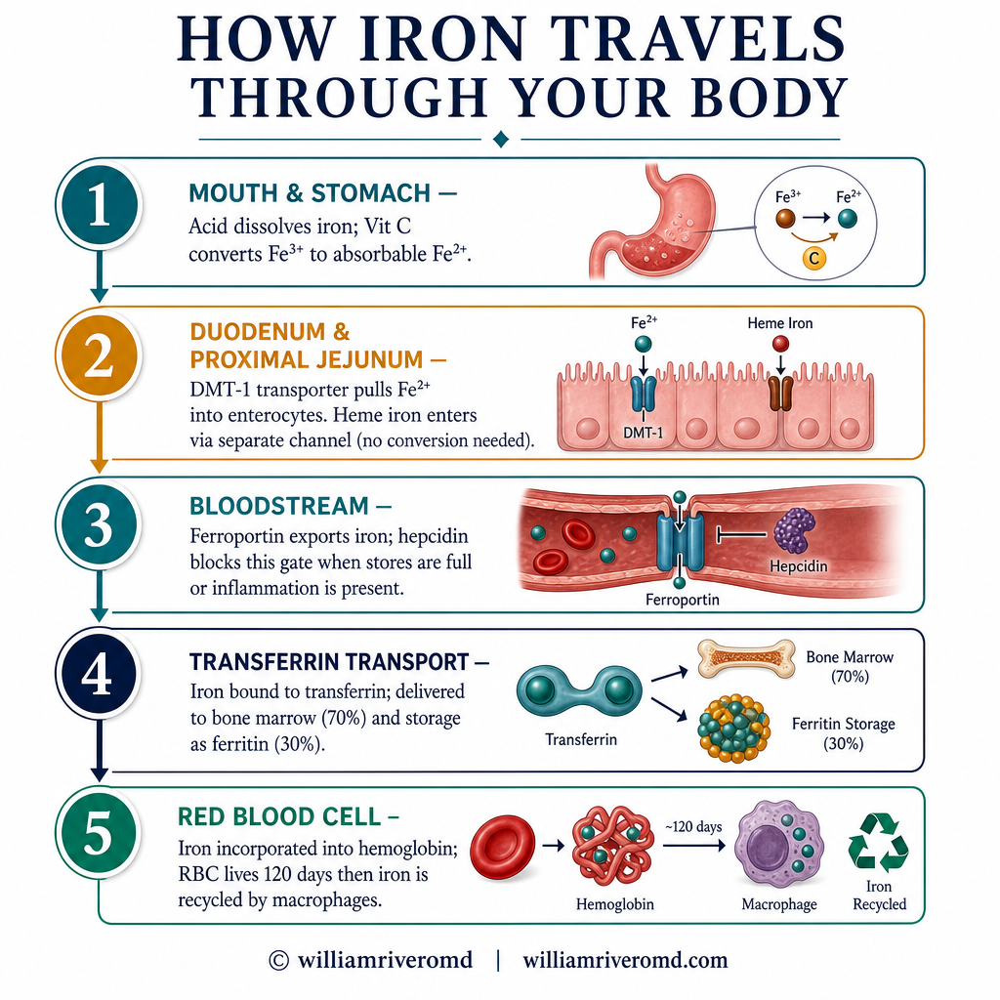
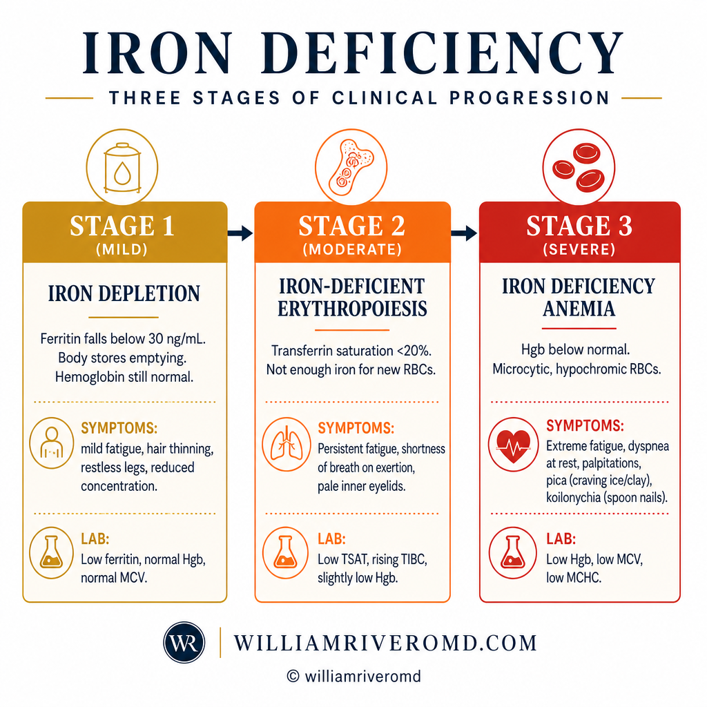
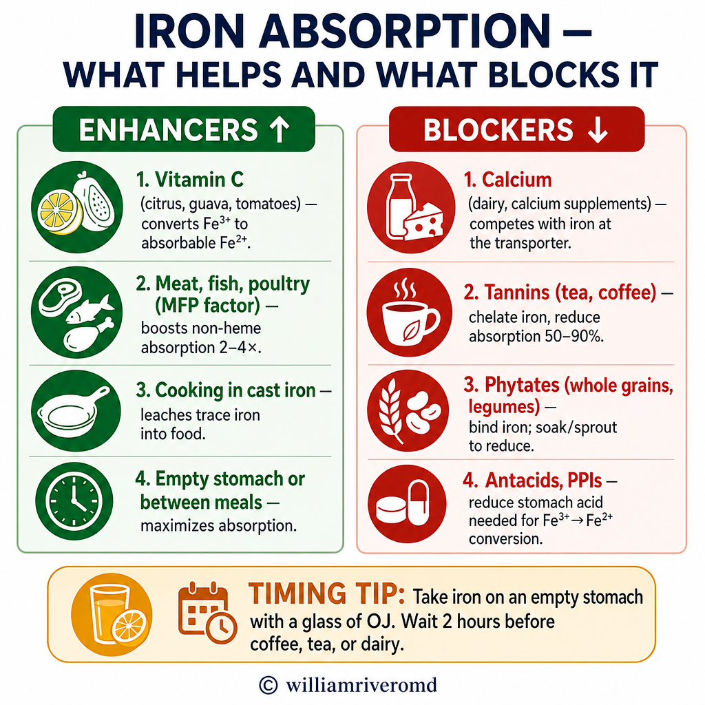
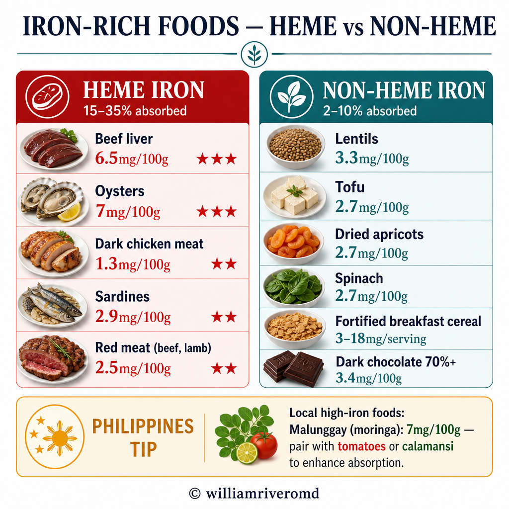
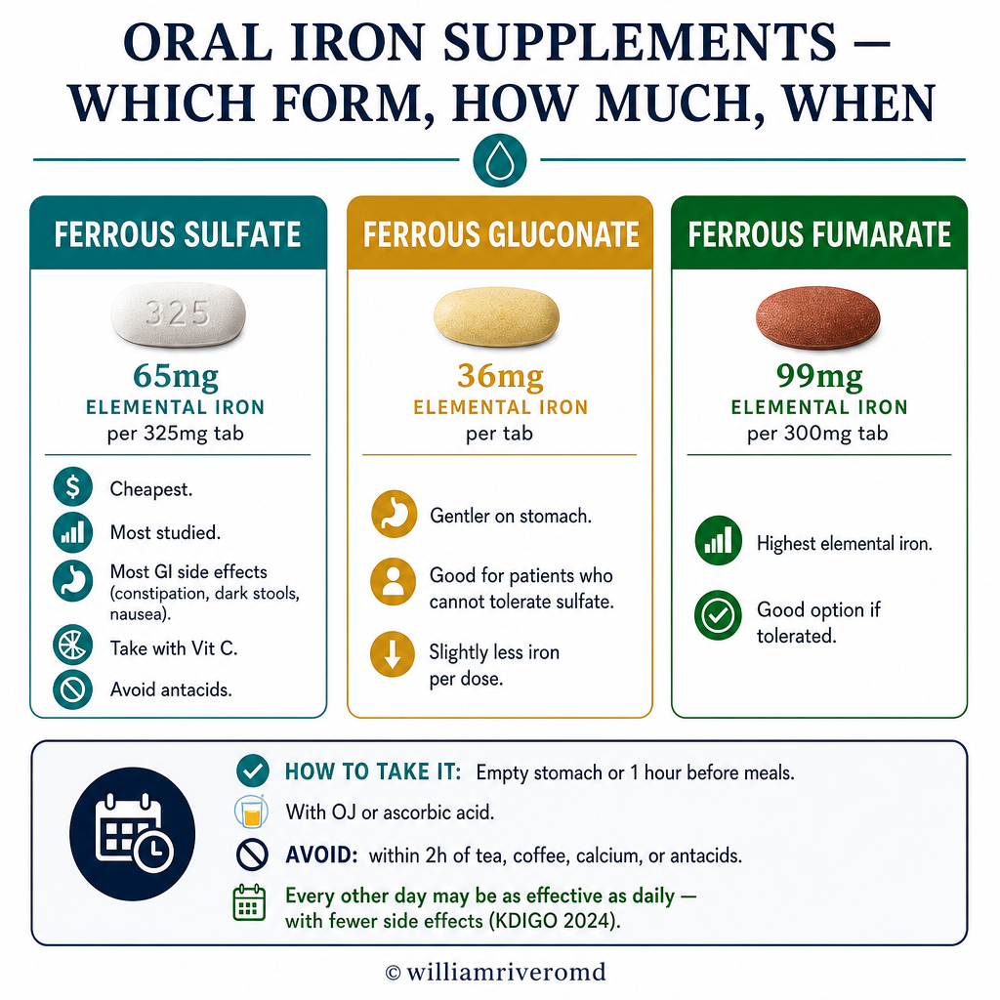
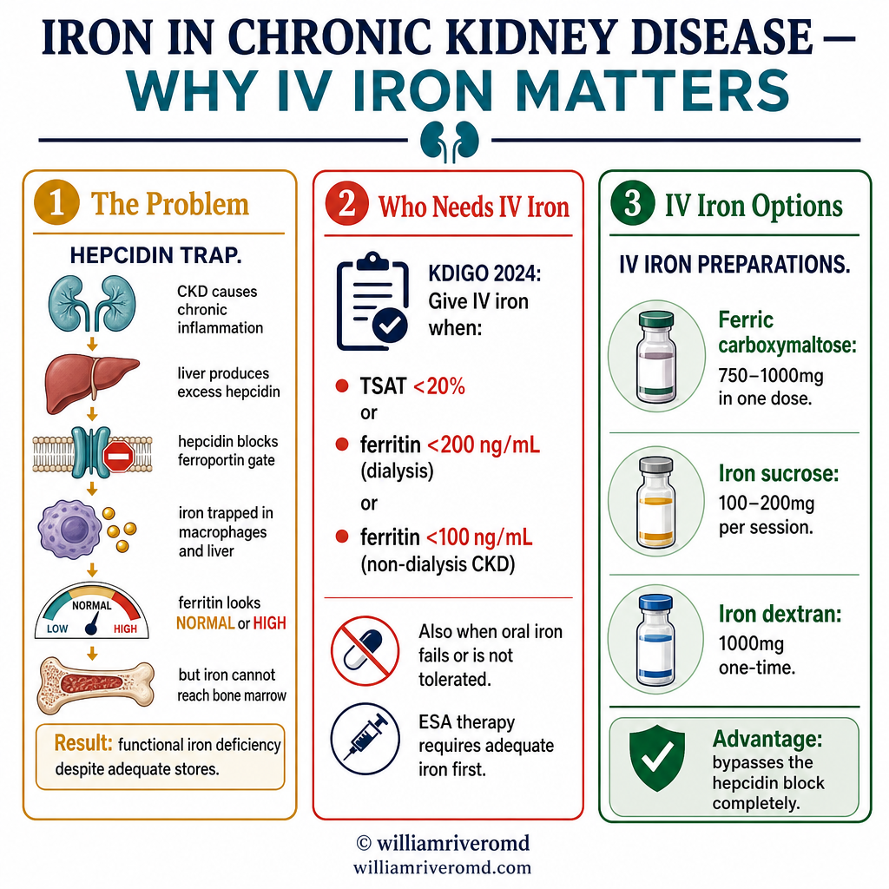

What Does Iron Do in Your Body?Ano ang Ginagawa ng Iron sa Inyong Katawan?Unsa ang Gibuhat sa Iron sa Inyong Lawas? Ano ing Ginagawa ning Iron king Inyu Bangkî?

Most iron in the body is continuously recycled from old red blood cells. The dietary contribution is small — but in CKD, hepcidin traps iron in storage even when ferritin appears normal, requiring IV supplementation.Ang karamihan sa iron sa katawan ay patuloy na nire-recycle mula sa mga lumang pulang selula ng dugo. Maliit lamang ang kontribusyon mula sa pagkain — ngunit sa CKD, ang hepcidin ay nag-iimbak ng iron kahit normal ang hitsura ng ferritin, na nangangailangan ng IV supplementation.Ang kadaghanan sa iron sa lawas kanunay nga gi-recycle gikan sa mga daan nga pulang selula sa dugo. Gamay lamang ang kontribusyon gikan sa pagkaon — apan sa CKD, ang hepcidin nag-imik sa iron sa imbakan bisan normal ang hitsura sa ferritin, nga nanginahanglan og IV supplementation. Ing kadaklan king iron king bangkî ya patuloy a nire-recycle mula king deng lumang pulang selula ning daya. Maliit lamang ing kontribusyon mula king pamangan — ngarud king CKD, ing hepcidin ya nag-iimbak ning iron kahit normal ing hitsura ning ferritin, a nangangailangan ning IV supplementation.
Iron is the mineral at the center of hemoglobin — the protein in red blood cells that carries oxygen from your lungs to every organ in your body. Without adequate iron, your body cannot make enough healthy red blood cells. The result is anemia — persistent fatigue, shortness of breath, pale skin, and reduced capacity to heal, think, and function.Ang iron ang mineral sa gitna ng hemoglobin — ang protina sa mga pulang selula ng dugo na nagdadala ng oxygen mula sa inyong mga baga patungo sa bawat organ ng inyong katawan. Kung walang sapat na iron, hindi makakagawa ang inyong katawan ng sapat na malusog na pulang selula ng dugo. Ang resulta ay anemia — patuloy na pagod, hirap sa paghinga, maputlang balat, at nabawasang kakayahan na gumaling, mag-isip, at gumana.Ang iron ang mineral sa sentro sa hemoglobin — ang protina sa mga pulang selula sa dugo nga nagdala sa oxygen gikan sa inyong mga baga ngadto sa matag organ sa inyong lawas. Kung walay igo nga iron, dili makahimo ang inyong lawas og igo nga maayo nga pulang selula sa dugo. Ang resulta mao ang anemia — padayon nga kakapoy, kawalay gininhawa, mapusaw nga panit, ug nabawasan nga kakayahan sa pagayo, pag-isip, ug pagtrabaho. Ing iron ing mineral king gitna ning hemoglobin — ing protina king deng pulang selula ning daya a nagdadala ning oxygen mula king inyu deng baga patungo king bawat organ ning inyu bangkî. Nung alang sapat a iron, ali makakagawa ing inyu bangkî ning sapat a malusog a pulang selula ning daya. Ing resulta ya anemia — patuloy a pagod, hirap king paghinga, maputlang balat, at nabawasang kakayahan a gumaling, mag-isip, at gumana.
Oxygen transportPagdadala ng oxygenPagdala sa oxygen Pagdadala ning oxygen
Iron is the core of heme — the part of hemoglobin that binds and releases oxygen. Each red blood cell contains ~270 million hemoglobin molecules. Without iron, cells cannot load oxygen in the lungs or deliver it to tissues.Ang iron ang puso ng heme — ang bahagi ng hemoglobin na nagbubuklod at naglalabas ng oxygen. Ang bawat pulang selula ng dugo ay naglalaman ng ~270 milyong molekula ng hemoglobin. Kung walang iron, hindi makakakuha ng oxygen ang mga selula sa baga at hindi makakapaghatid nito sa mga tisyu.Ang iron ang sentro sa heme — ang bahin sa hemoglobin nga nagpugong ug nagpagawas sa oxygen. Ang matag pulang selula sa dugo adunay ~270 milyong molekula sa hemoglobin. Kung walay iron, dili makakarga og oxygen ang mga selula sa baga ug dili makahatod niini sa mga tisyu. Ing iron ing pusu ning heme — ing bahagi ning hemoglobin a nagbubuklod at naglalabas ning oxygen. Ing bawat pulang selula ning daya ya naglalaman ning ~270 milyong molekula ning hemoglobin. Nung alang iron, ali makakakuha ning oxygen ing deng selula king baga at ali makakapaghatid nini king deng tisyu.
Energy productionProduksyon ng enerhiyaProduksyon sa enerhiya Produksyon ning enerhiya
Iron is essential in the mitochondrial electron transport chain — the process that produces ATP (cellular energy). Iron deficiency causes fatigue not just from anemia, but from impaired energy metabolism in every cell even before hemoglobin falls.Ang iron ay mahalaga sa mitochondrial electron transport chain — ang prosesong gumagawa ng ATP (cellular energy). Ang kakulangan ng iron ay nagdudulot ng pagod hindi lamang dahil sa anemia, kundi dahil din sa may kapansanan na energy metabolism sa bawat selula kahit bago bumaba ang hemoglobin.Ang iron mahinungdanon sa mitochondrial electron transport chain — ang proseso nga nagmugna sa ATP (cellular energy). Ang kakulangan sa iron nagdala og kakapoy dili lamang gikan sa anemia, kondili gikan usab sa may kapansanan nga energy metabolism sa matag selula bisan sa wala pa mahulog ang hemoglobin. Ing iron ya importante king mitochondrial electron transport chain — ing prosesong gumagawa ning ATP (cellular energy). Ing kakulangan ning iron ya nagdudulot ning pagod ali lamang dahil king anemia, kundi dahil din king atin kapansanan a energy metabolism king bawat selula kahit bago bumaba ing hemoglobin.
Immune function and DNA synthesisImmune function at DNA synthesisImmune function ug DNA synthesis Immune function at DNA synthesis
Iron is required for lymphocyte and neutrophil activity — immune cells need it to fight infection. It is also essential for DNA replication, which is why iron deficiency impairs wound healing, gut lining renewal, and immune response simultaneously.Kailangan ang iron para sa aktibidad ng lymphocyte at neutrophil — ang mga immune cells ay nangangailangan nito upang labanan ang impeksyon. Mahalaga rin ito para sa DNA replication, kaya naman ang kakulangan ng iron ay nagpapahina ng paggaling ng sugat, pagbabago ng lining ng bituka, at immune response nang sabay-sabay.Kinahanglan ang iron alang sa aktibidad sa lymphocyte ug neutrophil — ang mga immune cells nanginahanglan niini aron makiglaban sa impeksyon. Mahinungdanon usab kini alang sa DNA replication, mao kini ang hinungdan nga ang kakulangan sa iron nagpahuyang sa pagayo sa sugat, pagbag-o sa lining sa tinai, ug immune response sa dungan. Kailangan ing iron para king aktibidad ning lymphocyte at neutrophil — ing deng immune cells ya nangangailangan nini upang labanan ing impeksyon. Importante rin ini para king DNA replication, kaya naman ing kakulangan ning iron ya nagpapahina ning paggaling ning sugat, pagbabago ning lining ning bituka, at immune response nang sabay-sabay.
How Iron Travels Through Your BodyPaano Gumagalaw ang Iron sa Inyong KatawanGiunsa Paglakaw sa Iron sa Inyong Lawas Paano Gumagalaw ing Iron king Inyu Bangkî

Understanding iron's journey helps explain why deficiency develops, why oral iron sometimes fails, and why IV iron is necessary in certain conditions.Ang pag-unawa sa paglalakbay ng iron ay tumutulong na ipaliwanag kung bakit nagkakaroon ng kakulangan, bakit minsan nabibigo ang oral iron, at bakit kailangan ang IV iron sa ilang kondisyon.Ang pagsabot sa paglakbay sa iron nagtabang sa pagpasabot ngano mahitabo ang kakulangan, ngano usahay mapalpak ang oral iron, ug ngano kinahanglan ang IV iron sa pipila ka kondisyon. Ing pag-unawa king paglalakbay ning iron ya tumutulong a ipaliwanag nung bakit nagkakaroon ning kakulangan, bakit misan nabibigo ing oral iron, at bakit kailangan ing IV iron king ilang kondisyon.
The Iron Cycle — From Food to Red Blood CellAng Iron Cycle — Mula sa Pagkain hanggang sa Pulang Selula ng DugoAng Iron Cycle — Gikan sa Pagkaon ngadto sa Pulang Selula sa Dugo Ing Iron Cycle — Mula king Pamangan anggang king Pulang Selula ning Daya
Dietary intake — the starting pointPagtanggap mula sa pagkain — ang simulaPagdawat gikan sa pagkaon — ang sinugdanan Pagtanggap mula king pamangan — ing simula
Iron enters the body through food. Heme iron (from animal meat) is absorbed at 15–35%. Non-heme iron (from plants) is absorbed at only 2–10% — highly dependent on what else you eat at the same meal.Ang iron ay pumapasok sa katawan sa pamamagitan ng pagkain. Ang heme iron (mula sa karne ng hayop) ay nasisipsip sa 15–35%. Ang non-heme iron (mula sa mga halaman) ay nasisipsip lamang sa 2–10% — lubos na nakasalalay sa kung ano pa ang kinakain sa parehong pagkain.Ang iron mosulod sa lawas pinaagi sa pagkaon. Ang heme iron (gikan sa karne sa hayop) nasuyop sa 15–35%. Ang non-heme iron (gikan sa mga tanom) nasuyop lamang sa 2–10% — labi ka nagdepende sa kung unsa pa ang gikaon sa mao gihapon nga pagkaon. Ing iron ya pumapasok king bangkî king pamamagitan ning pamangan. Ing heme iron (mula king karne ning hayop) ya nasisipsip king 15–35%. Ing non-heme iron (mula king deng halaman) ya nasisipsip lamang king 2–10% — lubos a nakasalalay king nung ano pa ing kinakain king parehong pamangan.
Absorption in the small intestine (duodenum)Pagsipsip sa maliit na bituka (duodenum)Pagsuyop sa gamay nga tinai (duodenum) Pagsipsip king maliit a bituka (duodenum)
The duodenum is the primary site of iron absorption. Non-heme iron must first be reduced from Fe³⁺ (ferric) to Fe²⁺ (ferrous) form by stomach acid and vitamin C before it can be absorbed by enterocyte transporters. Low stomach acid (from antacids, PPIs) significantly impairs this step.Ang duodenum ang pangunahing lugar ng pagsipsip ng iron. Ang non-heme iron ay kailangang muna baguhin mula sa Fe³⁺ (ferric) patungong Fe²⁺ (ferrous) na anyo ng stomach acid at vitamin C bago ito masipsip ng mga enterocyte transporters. Ang mababang stomach acid (mula sa mga antacid, PPIs) ay makabuluhang nagpapahina ng hakbang na ito.Ang duodenum ang panguna nga dapit sa pagsuyop sa iron. Ang non-heme iron kinahanglan una nga mabag-o gikan sa Fe³⁺ (ferric) ngadto sa Fe²⁺ (ferrous) nga porma sa stomach acid ug vitamin C sa dili pa kini masuyop sa mga enterocyte transporters. Ang ubos nga stomach acid (gikan sa mga antacid, PPIs) labi ka nagpahuyang niining lakang. Ing duodenum ing pangunahing lugar ning pagsipsip ning iron. Ing non-heme iron ya kailangang muna baguhin mula king Fe³⁺ (ferric) patungong Fe²⁺ (ferrous) a anyo ning stomach acid at vitamin C bago ini masipsip ning deng enterocyte transporters. Ing mababang stomach acid (mula king deng antacid, PPIs) ya makabuluhang nagpapahina ning hakbang a ini.
Transport in the blood — transferrin carries ironTransportasyon sa dugo — ang transferrin ang nagdadala ng ironTransportasyon sa dugo — ang transferrin nagdala sa iron Transportasyon king daya — ing transferrin ing nagdadala ning iron
Absorbed iron binds to transferrin — a specialized transport protein. Transferrin saturation (TSAT) measures what percentage of transferrin is carrying iron. TSAT <20% means iron transport is insufficient for the bone marrow's needs.Ang nasisipsip na iron ay nagbubuklod sa transferrin — isang espesyalisadong transport protein. Sinusukat ng transferrin saturation (TSAT) kung anong porsyento ng transferrin ang nagdadala ng iron. Ang TSAT <20% ay nangangahulugang hindi sapat ang transportasyon ng iron para sa pangangailangan ng bone marrow.Ang nasuyop nga iron nagpugong sa transferrin — usa ka espesyalisadong transport protein. Ang transferrin saturation (TSAT) nagsukod kung unsa ka porsyento sa transferrin ang nagdala sa iron. Ang TSAT <20% nagpasabot nga dili igo ang transportasyon sa iron alang sa panginahanglan sa bone marrow. Ing nasisipsip a iron ya nagbubuklod king transferrin — metung a espesyalisadong transport protein. Sinusukat ning transferrin saturation (TSAT) nung anong porsyento ning transferrin ing nagdadala ning iron. Ing TSAT <20% ya nangangahulugang ali sapat ing transportasyon ning iron para king pangangailangan ning bone marrow.
Bone marrow — red cell productionBone marrow — produksyon ng pulang selulaBone marrow — produksyon sa pulang selula Bone marrow — produksyon ning pulang selula
Developing red blood cell precursors in the marrow absorb transferrin-bound iron to build hemoglobin. EPO (from the kidneys) stimulates this process. Iron-restricted erythropoiesis occurs when iron delivery is inadequate — even if iron stores appear normal.Ang mga nagbubuo na precursor ng pulang selula ng dugo sa marrow ay sumasipsip ng transferrin-bound iron upang bumuo ng hemoglobin. Ang EPO (mula sa mga bato) ay nagpapagana ng prosesong ito. Nangyayari ang iron-restricted erythropoiesis kapag hindi sapat ang paghahatid ng iron — kahit normal ang hitsura ng mga imbakan ng iron.Ang mga nagtubo nga precursor sa pulang selula sa dugo sa marrow nagsuyop sa transferrin-bound iron aron matukod ang hemoglobin. Ang EPO (gikan sa mga kidney) nagpagana niining proseso. Ang iron-restricted erythropoiesis mahitabo kung dili igo ang paghatod sa iron — bisan normal ang hitsura sa mga imbakan sa iron. Ing deng nagbubuo a precursor ning pulang selula ning daya king marrow ya sumasipsip ning transferrin-bound iron upang bumuo ning hemoglobin. Ing EPO (mula king deng batu) ya nagpapagana ning prosesong ini. Nangyayari ing iron-restricted erythropoiesis nung ali sapat ing paghahatid ning iron — kahit normal ing hitsura ning deng imbakan ning iron.
Recycling — macrophages reclaim iron from old cellsPag-recycle — kinukuha ng macrophages ang iron mula sa mga lumang selulaPag-recycle — ang macrophages nagkuha sa iron gikan sa mga daan nga selula Pag-recycle — kinukuha ning macrophages ing iron mula king deng lumang selula
Red blood cells live ~120 days. When they age and die, macrophages in the spleen and liver engulf them and extract the iron — returning ~25 mg back into circulation daily. This recycling is far larger than dietary absorption and is disrupted by chronic inflammation (anemia of chronic disease).Ang mga pulang selula ng dugo ay nabubuhay ng ~120 araw. Kapag tumatanda at namamatay ang mga ito, nilulunok ng macrophages sa pali at atay ang mga ito at kinukuha ang iron — nagbabalik ng ~25 mg sa sirkulasyon araw-araw. Ang pag-recycle na ito ay mas malaki kaysa dietary absorption at nasisira ng talamak na pamamaga (anemia of chronic disease).Ang mga pulang selula sa dugo nagbuhi og ~120 ka adlaw. Kung motigulang ug mamatay sila, gilamoy sa macrophages sa pali ug atay ang mga ito ug gikuha ang iron — nagbalik og ~25 mg sa sirkulasyon matag adlaw. Kining pag-recycle labi ka dako kaysa dietary absorption ug naguba sa chronic nga pamamaga (anemia of chronic disease). Ing deng pulang selula ning daya ya nabubuhay ning ~120 aldo. Nung tumatanda at namamatay ing deng ini, nilulunok ning macrophages king pali at atay ing deng ini at kinukuha ing iron — nagbabalik ning ~25 mg king sirkulasyon aldo-aldo. Ing pag-recycle a ini ya mas malaki kaysa dietary absorption at nasisira ning talamak a pamamaga (anemia of chronic disease).
Storage — ferritin holds iron reservesImbakan — ang ferritin ang nagtatago ng mga reserbang ironImbakan — ang ferritin nagpugong sa mga reserba nga iron Imbakan — ing ferritin ing nagtatago ning deng reserbang iron
Excess iron is stored as ferritin inside cells (primarily liver, spleen, and bone marrow). Serum ferritin reflects these stores — but ferritin is also an acute phase reactant that rises with inflammation, potentially masking true iron deficiency.Ang labis na iron ay iniipon bilang ferritin sa loob ng mga selula (pangunahin sa atay, pali, at bone marrow). Ang serum ferritin ay sumasalamin sa mga imbakang ito — ngunit ang ferritin ay acute phase reactant din na tumataas sa pamamaga, na posibleng nagtatago ng tunay na kakulangan ng iron.Ang sobrang iron gitipigan ingon ferritin sulod sa mga selula (panguna sa atay, pali, ug bone marrow). Ang serum ferritin nagpakita niining mga imbakan — apan ang ferritin acute phase reactant usab nga motaas sa pamamaga, posibleng nagtago sa tinuod nga kakulangan sa iron. Ing labis a iron ya iniipon bilang ferritin king loob ning deng selula (pangunahin king atay, pali, at bone marrow). Ing serum ferritin ya sumasalamin king deng imbakang ini — ngarud ing ferritin ya acute phase reactant din a tumataas king pamamaga, a posibleng nagtatago ning tunay a kakulangan ning iron.
Hepcidin — the iron gatekeeperHepcidin — ang bantay ng ironHepcidin — ang bantay sa iron Hepcidin — ing bantay ning iron
Hepcidin is a liver hormone that blocks iron absorption and release from stores. It rises dramatically with infection and inflammation — this is why iron supplements often fail during illness, and why treating the underlying inflammation is essential for iron therapy to work.Ang hepcidin ay isang liver hormone na naghahadlang sa pagsipsip ng iron at pagpapalaya nito mula sa mga imbakan. Tumataas ito nang malaki sa impeksyon at pamamaga — kaya naman ang mga iron supplement ay madalas na nabibigo sa panahon ng sakit, at kaya naman ang paggamot sa pinagmumulan na pamamaga ay mahalaga upang gumana ang iron therapy.Ang hepcidin usa ka liver hormone nga nagbabag sa pagsuyop sa iron ug pagpagawas niini gikan sa mga imbakan. Dramatiko kini nga motaas sa impeksyon ug pamamaga — mao kini ang hinungdan nga ang mga iron supplement kanunay nga mapalpak sa panahon sa sakit, ug mao kini ang hinungdan nga ang pagtambal sa nagpahimutang nga pamamaga mahinungdanon aron molihok ang iron therapy. Ing hepcidin ya metung a liver hormone a naghahadlang king pagsipsip ning iron at pagpapalaya nini mula king deng imbakan. Tumataas ini nang malaki king impeksyon at pamamaga — kaya naman ing deng iron supplement ya madalas a nabibigo king panahon ning sakit, at kaya naman ing paggamut king pinagmumulan a pamamaga ya importante upang gumana ing iron therapy.
Iron Deficiency — Stages and SymptomsKakulangan ng Iron — Mga Yugto at SintomasKakulangan sa Iron — Mga Yugto ug Sintomas Kakulangan ning Iron — Deng Yugto at Sintomas

Iron deficiency progresses in three stages before anemia becomes visible on a blood test. Symptoms appear early — often before hemoglobin falls.Ang kakulangan ng iron ay umuusad sa tatlong yugto bago maging nakikita ang anemia sa blood test. Ang mga sintomas ay lumalabas nang maaga — madalas bago bumaba ang hemoglobin.Ang kakulangan sa iron mosulong sa tulo ka yugto sa dili pa makita ang anemia sa blood test. Ang mga sintomas mogawas sayo — kanunay sa dili pa mahulog ang hemoglobin. Ing kakulangan ning iron ya umuusad king tatlong yugto bago maging nakikita ing anemia king blood test. Ing deng sintomas ya lumalabas nang maaga — madalas bago bumaba ing hemoglobin.
Stage 1 — Storage depletion (no symptoms yet)Yugto 1 — Pagkaubos ng imbakan (wala pang sintomas)Yugto 1 — Pagkaubos sa imbakan (wala pay sintomas) Yugto 1 — Pagkaubos ning imbakan (ala pang sintomas)
Ferritin falls below 30 ng/mL. Iron stores are depleted but hemoglobin and TSAT are still normal. The body compensates by increasing transferrin production. No symptoms yet — detected only on laboratory testing. This is the ideal stage to intervene and prevent progression.Bumababa ang ferritin sa ibaba ng 30 ng/mL. Nauubos ang mga imbakan ng iron ngunit normal pa rin ang hemoglobin at TSAT. Kinokompensahan ito ng katawan sa pamamagitan ng pagdaragdag ng produksyon ng transferrin. Wala pang sintomas — natutukoy lamang sa laboratory testing. Ito ang ideal na yugto para mamagitan at maiwasan ang pagsulong.Ang ferritin nahulog sa ubos sa 30 ng/mL. Naubos ang mga imbakan sa iron apan normal pa ang hemoglobin ug TSAT. Ang lawas nagkompensa pinaagi sa pagdugang sa produksyon sa transferrin. Walay sintomas pa — nasukod lamang sa laboratory testing. Kini ang ideal nga yugto aron mosulod ug malikayan ang pagsulong. Bumababa ing ferritin king ibaba ning 30 ning/mL. Nauubos ing deng imbakan ning iron ngarud normal pa rin ing hemoglobin at TSAT. Kinokompensahan ini ning bangkî king pamamagitan ning pagdaragdag ning produksyon ning transferrin. Ala pang sintomas — natutukoy lamang king laboratory testing. Ini ing ideal a yugto para mamagitan at maiwasan ing pagsulong.
Stage 2 — Iron-restricted erythropoiesis (early symptoms)Yugto 2 — Iron-restricted erythropoiesis (maagang sintomas)Yugto 2 — Iron-restricted erythropoiesis (sayo nga sintomas) Yugto 2 — Iron-restricted erythropoiesis (maagang sintomas)
TSAT falls below 20%. The bone marrow starts producing smaller, paler red blood cells because there is insufficient iron for hemoglobin synthesis. Fatigue, difficulty concentrating, reduced exercise tolerance, and cold intolerance begin — even before hemoglobin falls below the "anemia threshold."Bumababa ang TSAT sa ibaba ng 20%. Nagsisimulang gumawa ng mas maliit at mas maputlang mga pulang selula ng dugo ang bone marrow dahil hindi sapat ang iron para sa hemoglobin synthesis. Nagsisimula ang pagod, hirap sa konsentrasyon, nabawasang tolerance sa ehersisyo, at intolerance sa lamig — kahit bago bumaba ang hemoglobin sa ibaba ng "anemia threshold."Ang TSAT nahulog sa ubos sa 20%. Nagsugod ang bone marrow sa pagmugna og mas gagmay ug mas mapusaw nga mga pulang selula sa dugo tungod kay dili igo ang iron alang sa hemoglobin synthesis. Nagsugod ang kakapoy, kahasol sa konsentrasyon, nabawasang tolerance sa ehersisyo, ug intolerance sa kabugnaw — bisan sa dili pa mahulog ang hemoglobin sa ubos sa "anemia threshold." Bumababa ing TSAT king ibaba ning 20%. Nagsisimulang gumawa ning mas maliit at mas maputlang deng pulang selula ning daya ing bone marrow dahil ali sapat ing iron para king hemoglobin synthesis. Nagsisimula ing pagod, hirap king konsentrasyon, nabawasang tolerance king ehersisyo, at intolerance king lamig — kahit bago bumaba ing hemoglobin king ibaba ning "anemia threshold."
Stage 3 — Iron deficiency anemia (full clinical picture)Yugto 3 — Iron deficiency anemia (buong klinikalmenteng larawan)Yugto 3 — Iron deficiency anemia (tibuok klinikanhon nga larawan) Yugto 3 — Iron deficiency anemia (buong klinikalmenteng larawan)
Hemoglobin falls below 120 g/L (women) or 130 g/L (men). Red cells are microcytic (small) and hypochromic (pale). Symptoms are now clear: significant fatigue, pallor of skin and inner eyelids (conjunctival pallor), rapid heartbeat on exertion, shortness of breath, brittle nails, hair loss, and cravings for non-food items (pagophagia — craving for ice is classic).Bumababa ang hemoglobin sa ibaba ng 120 g/L (babae) o 130 g/L (lalaki). Ang mga pulang selula ay microcytic (maliit) at hypochromic (maputla). Malinaw na ngayon ang mga sintomas: makabuluhang pagod, pamumutla ng balat at panloob na mga takipmata (conjunctival pallor), mabilis na tibok ng puso sa pagsisikap, hirap sa paghinga, malutong na mga kuko, pagkalaglag ng buhok, at pananabik para sa mga hindi pagkaing bagay (pagophagia — ang pananabik sa yelo ang klasiko).Ang hemoglobin nahulog sa ubos sa 120 g/L (babaye) o 130 g/L (lalaki). Ang mga pulang selula microcytic (gagmay) ug hypochromic (mapusaw). Klaro na karon ang mga sintomas: mahinungdanon nga kakapoy, pamutsaw sa panit ug sulod nga mga talukap sa mata (conjunctival pallor), paspas nga tibok sa kasingkasing sa paningkamot, kawalay gininhawa, mamubo nga mga kuko, pagkahulog sa buhok, ug pangandoy sa mga dili pagkaon nga butang (pagophagia — ang pangandoy sa yelo mao ang klasiko). Bumababa ing hemoglobin king ibaba ning 120 g/L (babae) o 130 g/L (lalaki). Ing deng pulang selula ya microcytic (maliit) at hypochromic (maputla). Malinaw a ngayon ing deng sintomas: makabuluhang pagod, pamumutla ning balat at panloob a deng takipmata (conjunctival pallor), mabilis a tibok ning pusu king pagsisikap, hirap king paghinga, malutong a deng kuko, pagkalaglag ning buhok, at pananabik para king deng ali pagkaing bagay (pagophagia — ing pananabik king yelo ing klasiko).
Common causes of iron deficiency in Filipino patientsMga karaniwang sanhi ng kakulangan ng iron sa mga pasyenteng PilipinoMga kasagarang hinungdan sa kakulangan sa iron sa mga pasyenteng Pilipino Deng karaniwang sanhi ning kakulangan ning iron king deng pasyenteng Pilipino
- MenstruationReglaRegla Regla — women lose 15–30 mg of iron per cycle; heavy periods rapidly deplete storesang mga babae ay nawawalan ng 15–30 mg ng iron bawat cycle; ang mabibigat na regla ay mabilis na naubos ang mga imbakanang mga babaye nangawad-an og 15–30 mg nga iron matag cycle; ang bug-at nga regla mabilis nga naubos ang mga imbakan ing deng babae ya nawawalan ning 15–30 mg ning iron bawat cycle; ing mabibigat a regla ya mabilis a naubos ing deng imbakan
- Poor dietary ironKulang na iron sa pagkainKakulangan sa iron sa pagkaon Kulang a iron king pamangan — predominantly plant-based diets with low heme iron intakepangunahing plant-based na diyeta na may mababang pagtanggap ng heme ironpanguna nga plant-based nga diyeta nga adunay ubos nga pagdawat sa heme iron pangunahing plant-based a diyeta a atin mababang pagtanggap ning heme iron
- GI blood lossPagdurugo sa GI tractPagdugo sa GI tract Pagdurugo king GI tract — peptic ulcer, gastritis, colon polyps, hemorrhoids, or cancer. Always investigate in men and post-menopausal women.peptic ulcer, gastritis, colon polyps, hemorrhoids, o kanser. Palaging siyasatin sa mga lalaki at post-menopausal na babae.peptic ulcer, gastritis, colon polyps, hemorrhoids, o kanser. Kanunay imbestigahan sa mga lalaki ug post-menopausal nga babaye. peptic ulcer, gastritis, colon polyps, hemorrhoids, o kanser. Papirming siyasatin king deng lalaki at post-menopausal a babae.
- PregnancyPagbubuntisPagmabdos Pagbubuntis — iron requirements nearly triple; deficiency affects both mother and fetal brain developmenthalos tatlong beses na tumaas ang pangangailangan ng iron; ang kakulangan ay nakakaapekto sa ina at sa pag-unlad ng utak ng fetushalos tulo ka beses nga mitaas ang kinahanglan sa iron; ang kakulangan nakaapekto sa inahan ug sa pag-uswag sa utok sa fetus halos tatlong beses a tumaas ing pangangailangan ning iron; ing kakulangan ya nakakaapekto king ina at king pag-unlad ning utak ning fetus
- MalabsorptionMalabsorptionMalabsorption Malabsorption — gastric bypass, celiac disease, chronic use of antacids or PPIsgastric bypass, celiac disease, talamak na paggamit ng antacids o PPIsgastric bypass, celiac disease, chronic nga paggamit sa antacids o PPIs gastric bypass, celiac disease, talamak a paggamit ning antacids o PPIs
- CKD and dialysisCKD at dialysisCKD ug dialysis CKD at dialysis — blood loss through the dialysis circuit + hepcidin-driven iron trappingpagkawala ng dugo sa pamamagitan ng dialysis circuit + hepcidin-driven iron trappingpagkawala sa dugo pinaagi sa dialysis circuit + hepcidin-driven iron trapping pagkaala ning daya king pamamagitan ning dialysis circuit + hepcidin-driven iron trapping
Understanding Your Iron LabsPag-unawa sa Inyong mga Iron Lab ResultsPagsabot sa Inyong mga Iron Lab Results Pag-unawa king Inyu deng Iron Lab Results
| TestPagsusuriPagsusi Pagsusuri | What it measuresAno ang sinusukatUnsa ang gisukod Ano ing sinusukat | Normal rangeNormal na saklawNormal nga saklaw Normal a saklaw | Iron deficiency patternPattern ng kakulangan ng ironPattern sa kakulangan sa iron Pattern ning kakulangan ning iron |
|---|---|---|---|
| Hemoglobin (Hgb) | Oxygen-carrying protein in red cellsProtein sa mga pulang selula na nagdadala ng oxygenProtina sa mga pulang selula nga nagdala sa oxygen Protein king deng pulang selula a nagdadala ning oxygen | 120–160 g/L (F) / 130–170 g/L (M) | Low — but only in Stage 3. Normal in Stages 1–2.Mababa — ngunit sa Yugto 3 lamang. Normal sa Yugto 1–2.Ubos — apan sa Yugto 3 lamang. Normal sa Yugto 1–2. Mababa — ngarud king Yugto 3 lamang. Normal king Yugto 1–2. |
| MCV (Mean Cell Volume) | Red blood cell sizeSukat ng pulang selula ng dugoGidak-on sa pulang selula sa dugo Sukat ning pulang selula ning daya | 80–100 fL | Low (<80 fL) — microcytic cells. If normal, may be early/mixed deficiency.Mababa (<80 fL) — microcytic cells. Kung normal, maaaring maagang/halo-halong kakulangan.Ubos (<80 fL) — microcytic cells. Kung normal, mahimong sayo/halo-halong kakulangan. Mababa (<80 fL) — microcytic cells. Nung normal, maaaring maagang/halo-halong kakulangan. |
| Serum ferritin | Iron storage protein — reflects body iron storesProtein sa pag-iimbak ng iron — sumasalamin sa mga imbakan ng iron sa katawanProtina sa pag-imbak sa iron — nagpakita sa mga imbakan sa iron sa lawas Protein king pag-iimbak ning iron — sumasalamin king deng imbakan ning iron king bangkî | 12–150 ng/mL (F) / 12–300 (M) | <30 ng/mL = depleted stores. <12 = severe deficiency. NOTE: ferritin is falsely elevated with inflammation.<30 ng/mL = naubos ang mga imbakan. <12 = malubhang kakulangan. TANDAAN: ang ferritin ay maling mataas sa pamamaga.<30 ng/mL = naubos ang mga imbakan. <12 = grabe nga kakulangan. HINUMDOMAN: ang ferritin sayop nga taas sa pamamaga. <30 ning/mL = naubos ing deng imbakan. <12 = malubhang kakulangan. TANDAAN: ing ferritin ya maling matas king pamamaga. |
| Serum iron | Iron currently circulating bound to transferrinIron na kasalukuyang umiikot na nakabuklod sa transferrinIron nga karon nag-ikot nga nagpugong sa transferrin Iron a kasalukuyang umiikot a nakabuklod king transferrin | 60–170 mcg/dL | Low. Fluctuates with meals — less reliable alone than ferritin or TSAT.Mababa. Nagbabago-bago sa pagkain — hindi gaanong maaasahan nang mag-isa kaysa ferritin o TSAT.Ubos. Nagbag-o-bago sa pagkaon — dili kaayo masaligan nga mag-inusara kaysa ferritin o TSAT. Mababa. Nagbabago-bago king pamangan — ali gaanong maaasahan nang mag-metung kaysa ferritin o TSAT. |
| TIBC (Total Iron Binding Capacity) | Maximum amount of iron transferrin can carryPinakamataas na dami ng iron na madadala ng transferrinPinakataas nga gidaghanon sa iron nga madala sa transferrin Pinakamatas a dami ning iron a madadala ning transferrin | 250–370 mcg/dL | High — body makes more transferrin to capture scarce ironMataas — gumagawa ang katawan ng mas maraming transferrin upang makuha ang bihirang ironTaas — ang lawas nagmugna og mas daghang transferrin aron makuha ang bihirang iron Matas — gumagawa ing bangkî ning mas dacal a transferrin upang makuha ing bihirang iron |
| TSAT (Transferrin Saturation) | % of transferrin actually carrying iron% ng transferrin na tunay na nagdadala ng iron% sa transferrin nga tinuod nga nagdala sa iron % ning transferrin a tunay a nagdadala ning iron | 20–50% | <20% = iron-restricted erythropoiesis. Below this, bone marrow cannot make hemoglobin efficiently.<20% = iron-restricted erythropoiesis. Sa ibaba nito, hindi kayang gumawa ng hemoglobin nang mahusay ang bone marrow.<20% = iron-restricted erythropoiesis. Sa ubos niini, dili makahimo ang bone marrow og hemoglobin nga episyente. <20% = iron-restricted erythropoiesis. King ibaba nini, ali kayang gumawa ning hemoglobin nang mahusay ing bone marrow. |
| Reticulocyte Hgb Content (CHr) | Iron availability in newly made red cellsPagkakaroon ng iron sa mga bagong gawang pulang selulaPagkaanaa sa iron sa mga bag-ong gihimong pulang selula Pagkakaroon ning iron king deng bagong gawang pulang selula | >29 pg | <29 pg = iron-restricted erythropoiesis — most sensitive early marker<29 pg = iron-restricted erythropoiesis — pinaka-sensitibong maagang tanda<29 pg = iron-restricted erythropoiesis — labing sensitibong sayo nga timailhan <29 pg = iron-restricted erythropoiesis — pinaka-sensitibong maagang tanda |
| Soluble transferrin receptor (sTfR) | Tissue iron demand — rises when cells are iron-starvedPangangailangan ng iron ng tisyu — tumataas kapag kulang ng iron ang mga selulaPanginahanglan sa iron sa tisyu — motaas kung gutom sa iron ang mga selula Pangangailangan ning iron ning tisyu — tumataas nung kulang ning iron ing deng selula | 0.8–1.8 mg/L (varies by lab) | Elevated — does NOT rise with inflammation (unlike ferritin). Useful when ferritin is unreliable due to inflammation.Mataas — HINDI tumataas sa pamamaga (hindi tulad ng ferritin). Kapaki-pakinabang kapag hindi maaasahan ang ferritin dahil sa pamamaga.Taas — DILI motaas sa pamamaga (dili sama sa ferritin). Mapuslanon kung dili masaligan ang ferritin tungod sa pamamaga. Matas — HINDI tumataas king pamamaga (ali tulad ning ferritin). Kapaki-pakinabang nung ali maaasahan ing ferritin dahil king pamamaga. |
The ferritin paradox in inflammationAng paradox ng ferritin sa pamamagaAng paradox sa ferritin sa pamamaga Ing paradox ning ferritin king pamamaga
Ferritin is an acute-phase reactant — it rises dramatically during infection, autoimmune disease, malignancy, and chronic inflammation. A ferritin of 300 ng/mL in a patient with active rheumatoid arthritis or CKD does not mean iron stores are adequate — it may still be iron-deficient. In these cases, TSAT and sTfR are more reliable guides than ferritin alone.Ang ferritin ay acute-phase reactant — dramatiko itong tumataas sa panahon ng impeksyon, autoimmune disease, malignancy, at talamak na pamamaga. Ang ferritin na 300 ng/mL sa pasyente na may aktibong rheumatoid arthritis o CKD ay hindi nangangahulugang sapat ang mga imbakan ng iron — maaari pa ring magkulang ng iron. Sa mga kasong ito, ang TSAT at sTfR ang mas maaasahang mga gabay kaysa ferritin lamang.Ang ferritin acute-phase reactant — dramatiko kini nga motaas sa panahon sa impeksyon, autoimmune disease, malignancy, ug chronic nga pamamaga. Ang ferritin nga 300 ng/mL sa pasyente nga adunay aktibong rheumatoid arthritis o CKD dili nagpasabot nga igo ang mga imbakan sa iron — mahimong kulang pa gihapon sa iron. Sa kini nga mga kaso, ang TSAT ug sTfR mas masaligan nga mga giya kaysa ferritin lamang. Ing ferritin ya acute-phase reactant — dramatiko itong tumataas king panahon ning impeksyon, autoimmune disease, malignancy, at talamak a pamamaga. Ing ferritin a 300 ning/mL king pasyente a atin aktibong rheumatoid arthritis o CKD ya ali nangangahulugang sapat ing deng imbakan ning iron — maaari pa ring magkulang ning iron. King deng kasong ini, ing TSAT at sTfR ing mas maaasahang deng gabay kaysa ferritin lamang.
What Helps and What Blocks Iron AbsorptionAno ang Tumutulong at Ano ang Naghahadlang sa Pagsipsip ng IronUnsa ang Nagtabang ug Unsa ang Nagbabag sa Pagsuyop sa Iron Ano ing Tumutulong at Ano ing Naghahadlang king Pagsipsip ning Iron

Iron absorption is one of the most heavily regulated processes in human physiology. Understanding what enhances and inhibits it allows you to time meals and supplements for maximum benefit.Ang pagsipsip ng iron ay isa sa pinaka-regulated na proseso sa pisyolohiya ng tao. Ang pag-unawa sa kung ano ang nagpapalakas at nagpipigil nito ay nagbibigay-daan sa inyo na i-time ang mga pagkain at supplement para sa pinakamataas na benepisyo.Ang pagsuyop sa iron usa sa labing heavily regulated nga proseso sa pisyolohiya sa tawo. Ang pagsabot sa kung unsa ang nagpalakas ug nagpugong niini nagpaposible sa inyo nga i-time ang mga pagkaon ug supplement alang sa pinakataas nga benepisyo. Ing pagsipsip ning iron ya metung king pinaka-regulated a proseso king pisyolohiya ning tao. Ing pag-unawa king nung ano ing nagpapalakas at nagpipigil nini ya nagbibigay-daan king inyo a i-time ing deng pamangan at supplement para king pinakamatas a benepisyo.
ENHANCERS — take iron with theseMGA NAGPAPALAKAS — inumin ang iron kasabay ng mga itoMGA NAGPALAKAS — iinom ang iron uban niini MGA NAGPAPALAKAS — inumin ing iron kasabay ning deng ini
- Vitamin C (ascorbic acid)Vitamin C (ascorbic acid)Vitamin C (ascorbic acid) Vitamin C (ascorbic acid) — most potent enhancer. Converts Fe³⁺ to absorbable Fe²⁺. Squeeze calamansi or dalandan with every iron-rich meal or supplement. Even 50 mg vitamin C doubles non-heme iron absorption.pinaka-malakas na nagpapalakas. Binabago ang Fe³⁺ patungong Fe²⁺ na masisipsip. Pisilin ang calamansi o dalandan sa bawat pagkaing mayaman sa iron o supplement. Kahit 50 mg vitamin C ay nagdodoble ng pagsipsip ng non-heme iron.labing gamhanan nga nagpalakas. Nagbag-o sa Fe³⁺ ngadto sa Fe²⁺ nga masuyop. Pisaa ang calamansi o dalandan sa matag pagkaon nga dato sa iron o supplement. Bisan 50 mg vitamin C nagdoble sa pagsuyop sa non-heme iron. pinaka-malakas a nagpapalakas. Binabago ing Fe³⁺ patungong Fe²⁺ a masisipsip. Pisilin ing calamansi o dalandan king bawat pagkaing mayaman king iron o supplement. Kahit 50 mg vitamin C ya nagdodoble ning pagsipsip ning non-heme iron.
- Meat, fish, and poultry (MFP factor)Karne, isda, at manok (MFP factor)Karne, isda, ug manok (MFP factor) Karne, isda, at manok (MFP factor) — heme iron in animal protein enhances non-heme iron absorption from plant foods eaten in the same meal. Eating chicken with mongo beans increases mongo's iron absorption significantly.ang heme iron sa protina ng hayop ay nagpapalakas ng pagsipsip ng non-heme iron mula sa mga pagkaing halaman na kinakain sa parehong pagkain. Ang pagkain ng manok kasama ang mongo beans ay makabuluhang nagpapataas ng pagsipsip ng iron ng mongo.ang heme iron sa protina sa hayop nagpalakas sa pagsuyop sa non-heme iron gikan sa mga pagkaon nga tanom nga gikaon sa mao gihapon nga pagkaon. Ang pagkaon sa manok uban ang mongo beans labi ka nagpataas sa pagsuyop sa iron sa mongo. ing heme iron king protina ning hayop ya nagpapalakas ning pagsipsip ning non-heme iron mula king deng pagkaing halaman a kinakain king parehong pamangan. Ing pamangan ning manok kasama ing mongo beans ya makabuluhang nagpapataas ning pagsipsip ning iron ning mongo.
- Acidic environmentMaasim na kapaligiranAsido nga kapaligiran Maasim a kapaligiran — take oral iron supplements on an empty stomach (30 minutes before meals) when tolerated, where stomach acid is highest.inumin ang oral iron supplements sa walang laman na tiyan (30 minuto bago kumain) kung matiis, kung saan pinakamataas ang stomach acid.iinom ang oral iron supplements sa wala'y sulod nga tiyan (30 minuto sa wala pa mokaon) kung matindog, diin pinakataas ang stomach acid. inumin ing oral iron supplements king alang laman a tiyan (30 minuto bago mangan) nung matiis, nung saan pinakamatas ing stomach acid.
- Fermented foodsMga na-ferment na pagkainMga gi-ferment nga pagkaon Deng a-ferment a pamangan — lacto-fermented vegetables may partially reduce phytate inhibitors.ang mga lacto-fermented na gulay ay maaaring bahagyang magbawas ng mga phytate inhibitors.ang mga lacto-fermented nga utanon mahimong bahin nga magpakunhod sa mga phytate inhibitors. ing deng lacto-fermented a gulay ya maaaring bahagyang magbawas ning deng phytate inhibitors.
INHIBITORS — separate from iron by 2 hoursMGA NAGHAHADLANG — ihiwalay mula sa iron ng 2 orasMGA NAGBABAG — ihimulag gikan sa iron og 2 oras MGA NAGHAHADLANG — ihiwalay mula king iron ning 2 oras
- Tea and coffeeTsaa at kapeTsaa ug kape Tsaa at kape — tannins bind iron tightly. Drinking tea or coffee with a meal reduces iron absorption by 60–90%. Wait at least 1 hour after eating before drinking.ang mga tannin ay mahigpit na nagbubuklod ng iron. Ang pag-inom ng tsaa o kape kasabay ng pagkain ay nagpapababa ng pagsipsip ng iron ng 60–90%. Maghintay ng hindi bababa sa 1 oras pagkatapos kumain bago uminom.ang mga tannin hugot nga nagpugong sa iron. Ang pag-inom sa tsaa o kape uban ang pagkaon nagpakunhod sa pagsuyop sa iron og 60–90%. Maghulat og labing menos 1 oras human mokaon sa wala pa moinom. ing deng tannin ya mahigpit a nagbubuklod ning iron. Ing pag-inom ning tsaa o kape kasabay ning pamangan ya nagpapababa ning pagsipsip ning iron ning 60–90%. Maghintay ning ali bababa king 1 oras kapabanuan mangan bago uminom.
- CalciumCalciumCalcium Calcium — competes with iron for the same intestinal transporter. Do not take calcium supplements or eat large amounts of dairy within 2 hours of iron supplements.nakikipagkumpitensya sa iron para sa parehong intestinal transporter. Huwag uminom ng calcium supplements o kumain ng malaking halaga ng dairy sa loob ng 2 oras ng iron supplements.nagkompetensya sa iron alang sa mao gihapon nga intestinal transporter. Ayaw moinom og calcium supplements o mokaon og dakong kantidad sa dairy sulod sa 2 oras sa iron supplements. nakikipagkumpitensya king iron para king parehong intestinal transporter. Eka uminom ning calcium supplements o mangan ning malaking halaga ning dairy king loob ning 2 oras ning iron supplements.
- PhytatesPhytatesPhytates Phytates — found in whole grains, legumes, and nuts. Significantly reduce non-heme iron absorption. Soaking and fermenting reduces phytate content.matatagpuan sa whole grains, legumes, at nuts. Makabuluhang nagpapababa ng pagsipsip ng non-heme iron. Ang pagbababad at pagfa-ferment ay nagpapababa ng nilalaman ng phytate.makita sa whole grains, legumes, ug nuts. Labi ka nagpakunhod sa pagsuyop sa non-heme iron. Ang pagbabad ug pag-ferment nagpakunhod sa sulod sa phytate. matatagpuan king whole grains, legumes, at nuts. Makabuluhang nagpapababa ning pagsipsip ning non-heme iron. Ing pagbababad at pagfa-ferment ya nagpapababa ning nilalaman ning phytate.
- Antacids and PPIsAntacids at PPIsAntacids ug PPIs Antacids at PPIs — reduce stomach acid needed to reduce Fe³⁺ to absorbable Fe²⁺. Take iron supplements at least 2 hours before antacids.nagpapababa ng stomach acid na kailangan upang baguhin ang Fe³⁺ patungong Fe²⁺ na masisipsip. Inumin ang iron supplements nang hindi bababa sa 2 oras bago uminom ng antacids.nagpakunhod sa stomach acid nga kinahanglan aron mabag-o ang Fe³⁺ ngadto sa Fe²⁺ nga masuyop. Iinom ang iron supplements og labing menos 2 oras sa wala pa moinom og antacids. nagpapababa ning stomach acid a kailangan upang baguhin ing Fe³⁺ patungong Fe²⁺ a masisipsip. Inumin ing iron supplements nang ali bababa king 2 oras bago uminom ning antacids.
- Phosphate binders (in CKD)Phosphate binders (sa CKD)Phosphate binders (sa CKD) Phosphate binders (king CKD) — separate from iron by at least 2 hours.ihiwalay mula sa iron ng hindi bababa sa 2 oras.ihimulag gikan sa iron og labing menos 2 oras. ihiwalay mula king iron ning ali bababa king 2 oras.
- Eggs (oxalates in yolk)Itlog (oxalates sa yolk)Itlog (oxalates sa yolk) Itlog (oxalates king yolk) — moderate inhibition of non-heme iron.katamtamang paghahadlang sa non-heme iron.katamtamang pagbabag sa non-heme iron. katamtamang paghahadlang king non-heme iron.
Iron-Rich Foods — Filipino SourcesMga Pagkaing Mayaman sa Iron — Mga Pilipinong PinagkukunanMga Pagkaon nga Dato sa Iron — Mga Pilipinong Tinubdan Deng Pagkaing Mayaman king Iron — Deng Pilipinong Pinagkukunan

| FoodPagkainPagkaon Pamangan | Iron content (per 100g)Nilalaman ng iron (bawat 100g)Sulod sa iron (matag 100g) Nilalaman ning iron (bawat 100g) | TypeUriKlase Uri | Kidney safetyKaligtasan para sa batoKaligtasan alang sa kidney Kaligtasan para king batu |
|---|---|---|---|
| Malunggay (moringa) leavesDahon ng malunggay (moringa)Dahon sa malunggay (moringa) Dahon ning malunggay (moringa) | ~7 mg (dried) / ~1.5 mg (fresh) | Non-heme | ✓ Safe in moderate amounts; low potassium when boiled✓ Ligtas sa katamtamang dami; mababa ang potassium kapag niluto✓ Luwas sa katamtamang gidaghanon; ubos ang potassium kung luto ✓ Ligtas king katamtamang dami; mababa ing potassium nung niluto |
| Lean beef (kaldereta cut)Payat na baka (hiwa para sa kaldereta)Payat nga baka (hiwa alang sa kaldereta) Payat a baka (hiwa para king kaldereta) | ~2.5–3.5 mg | Heme | ⚠ Limit to 1 serving/day in CKD — phosphorus and potassium⚠ Limitahan sa 1 serving/araw sa CKD — phosphorus at potassium⚠ Limitahan sa 1 serving/adlaw sa CKD — phosphorus ug potassium ⚠ Limitahan king 1 serving/aldo king CKD — phosphorus at potassium |
| Chicken liverAtay ng manokAtay sa manok Atay ning manok | ~9 mg | Heme | ✗ Avoid in CKD — extremely high phosphorus and potassium✗ Iwasan sa CKD — napakataas ng phosphorus at potassium✗ Likayi sa CKD — labi ka taas nga phosphorus ug potassium ✗ Iwasan king CKD — napakataas ning phosphorus at potassium |
| Chicken breast / thighDibdib / hita ng manokDughan / paa sa manok Dibdib / hita ning manok | ~1.0–1.5 mg | Heme | ✓ Best animal iron source for CKD patients✓ Pinakamainam na pinagkukunan ng iron mula sa hayop para sa mga pasyente ng CKD✓ Labing maayo nga tinubdan sa iron gikan sa hayop alang sa mga pasyente sa CKD ✓ Pinakamainam a pinagkukunan ning iron mula king hayop para king deng pasyente ning CKD |
| Bangus (milkfish)Bangus (milkfish)Bangus (milkfish) Bangus (milkfish) | ~1.2 mg | Heme | ✓ Safe; moderate phosphorus✓ Ligtas; katamtamang phosphorus✓ Luwas; katamtamang phosphorus ✓ Ligtas; katamtamang phosphorus |
| Mongo beans (mung beans, boiled)Mongo beans (mung beans, niluto)Mongo beans (mung beans, luto) Mongo beans (mung beans, niluto) | ~1.4 mg | Non-heme | ⚠ Moderate phosphorus; small portions in advanced CKD⚠ Katamtamang phosphorus; maliliit na bahagi sa advanced CKD⚠ Katamtamang phosphorus; gagmay nga bahin sa advanced CKD ⚠ Katamtamang phosphorus; maliliit a bahagi king advanced CKD |
| Kangkong (water spinach)Kangkong (water spinach)Kangkong (water spinach) Kangkong (water spinach) | ~1.7 mg | Non-heme | ⚠ Moderate potassium — leach before eating⚠ Katamtamang potassium — ibabad bago kainin⚠ Katamtamang potassium — ibabad sa dili pa kaonon ⚠ Katamtamang potassium — ibabad bago kainin |
| Tofu (firm)Tofu (matigas)Tofu (lig-on) Tofu (matigas) | ~1.6 mg | Non-heme | ⚠ Moderate phosphorus; small portions in CKD⚠ Katamtamang phosphorus; maliliit na bahagi sa CKD⚠ Katamtamang phosphorus; gagmay nga bahin sa CKD ⚠ Katamtamang phosphorus; maliliit a bahagi king CKD |
| Egg yolk (1 large)Pula ng itlog (1 malaki)Pula sa itlog (1 dako) Pula ning itlog (1 malaki) | ~0.9 mg | Non-heme | ⚠ High phosphorus — egg whites are better for CKD⚠ Mataas na phosphorus — ang puti ng itlog ay mas mainam para sa CKD⚠ Taas nga phosphorus — ang puti sa itlog mas maayo alang sa CKD ⚠ Matas a phosphorus — ing puti ning itlog ya mas mainam para king CKD |
| Fortified white rice / cerealsFortified na puting bigas / cerealsFortified nga puting bugas / cereals Fortified a puting bigas / cereals | 1.5–4 mg (fortified) | Non-heme | ✓ Safe; lower phosphorus than brown rice✓ Ligtas; mas mababang phosphorus kaysa brown rice✓ Luwas; mas ubos nga phosphorus kaysa brown rice ✓ Ligtas; mas mababang phosphorus kaysa brown rice |
The calamansi trick for every iron-rich mealAng trick na calamansi para sa bawat pagkaing mayaman sa ironAng trick sa calamansi alang sa matag pagkaon nga dato sa iron Ing trick a calamansi para king bawat pagkaing mayaman king iron
Squeeze 2–3 calamansi over any plant-based iron source — mongo, kangkong, malunggay, fortified rice. The vitamin C converts plant iron to its absorbable form and can multiply absorption 2–4 fold. This single habit significantly improves iron status in patients relying on plant iron sources. For CKD patients who cannot eat calamansi (very rare) — a small piece of pineapple or guava achieves the same effect.Pislin ang 2–3 calamansi sa anumang plant-based na pinagkukunan ng iron — mongo, kangkong, malunggay, fortified rice. Binabago ng vitamin C ang plant iron sa masisipsip na anyo nito at maaaring magdoble ng pagsipsip ng 2–4 beses. Ang isang ugaling ito ay makabuluhang nagpapabuti ng iron status sa mga pasyente na umaasa sa plant iron sources. Para sa mga pasyente ng CKD na hindi makakakain ng calamansi (bihira) — ang maliit na piraso ng pinya o bayabas ay nakakamit ng parehong epekto.Pisaa ang 2–3 calamansi sa bisan unsang plant-based nga tinubdan sa iron — mongo, kangkong, malunggay, fortified rice. Ang vitamin C nagbag-o sa plant iron ngadto sa masuyop niini nga porma ug mahimong magdoble sa pagsuyop og 2–4 ka beses. Kining usa ka batasan labi ka nagpauswag sa iron status sa mga pasyente nga nag-asa sa plant iron sources. Alang sa mga pasyente sa CKD nga dili makakaon sa calamansi (bihirang mahitabo) — ang gamay nga piraso sa pinya o bayabas nakaangkon sa mao gihapon nga epekto. Pislin ing 2–3 calamansi king anumang plant-based a pinagkukunan ning iron — mongo, kangkong, malunggay, fortified rice. Binabago ning vitamin C ing plant iron king masisipsip a anyo nini at maaaring magdoble ning pagsipsip ning 2–4 beses. Ing metung a ugaling ini ya makabuluhang nagpapabuti ning iron status king deng pasyente a umaasa king plant iron sources. Para king deng pasyente ning CKD a ali makakakain ning calamansi (bihira) — ing maliit a piraso ning pinya o bayabas ya nakakamit ning parehong epekto.
Iron Supplements — How to Take Them CorrectlyMga Iron Supplement — Paano Ang Tamang Pag-inomMga Iron Supplement — Giunsa Ang Husto nga Pag-inom Deng Iron Supplement — Paano Ing Tamang Pag-inom

Oral iron — forms and timingOral iron — mga anyo at oras ng pag-inomOral iron — mga porma ug oras sa pag-inom Oral iron — deng anyo at oras ning pag-inom
Ferrous sulfate (325 mg) is the most common and least expensive. Ferrous gluconate and ferrous fumarate are gentler on the stomach. Take on an empty stomach 30 minutes before meals for best absorption. If stomach upset occurs, take with a small amount of food — absorption decreases but tolerability improves. Alternate-day dosing (every other day) is now shown to be as effective as daily dosing with fewer side effects.Ang ferrous sulfate (325 mg) ang pinaka-karaniwan at pinaka-murang uri. Ang ferrous gluconate at ferrous fumarate ay mas mahinahon sa tiyan. Inumin sa walang laman na tiyan 30 minuto bago kumain para sa pinakamainam na pagsipsip. Kung magkasakit ang tiyan, inumin kasabay ng kaunting pagkain — bumababa ang pagsipsip ngunit nagpapabuti ang tolerabilidad. Ang alternate-day dosing (bawat ibang araw) ay ngayon ay napatunayang kasing epektibo ng araw-araw na dosing na may mas kaunting side effects.Ang ferrous sulfate (325 mg) mao ang labing kasagaran ug labing barato. Ang ferrous gluconate ug ferrous fumarate mas malumo sa tiyan. Iinom sa wala'y sulod nga tiyan 30 minuto sa wala pa mokaon alang sa labing maayo nga pagsuyop. Kung masakit ang tiyan, iinom uban ang gamay nga pagkaon — nagpakunhod ang pagsuyop apan nagpauswag ang tolerability. Ang alternate-day dosing (matag laing adlaw) karon napatunayang kasingepektibo sa adlaw-adlaw nga dosing nga adunay mas gamay nga side effects. Ing ferrous sulfate (325 mg) ing pinaka-karaniwan at pinaka-murang uri. Ing ferrous gluconate at ferrous fumarate ya mas mahinahon king tiyan. Inumin king alang laman a tiyan 30 minuto bago mangan para king pinakamainam a pagsipsip. Nung magkasakit ing tiyan, inumin kasabay ning kaunting pamangan — bumababa ing pagsipsip ngarud nagpapabuti ing tolerabilidad. Ing alternate-day dosing (bawat ibang aldo) ya ngayon ya napatunayang kasing epektibo ning aldo-aldo a dosing a atin mas kaunting side effects.
Expected side effectsMga inaasahang side effectsMga gipaabut nga side effects Deng inaasahang side effects
Black or dark green stools — completely normal and expected (not blood). Constipation — increase water and fiber intake; psyllium husk 5 g daily helps. Nausea — take with a small amount of food and reduce dose temporarily. These effects are from the 90% of iron that is NOT absorbed irritating the gut lining.Itim o maitim na berdeng dumi — ganap na normal at inaasahan (hindi dugo). Constipation — dagdagan ang tubig at fiber sa pagkain; ang psyllium husk na 5 g araw-araw ay nakatutulong. Pagduduwal — inumin kasabay ng kaunting pagkain at pansamantalang bawasan ang dosis. Ang mga epektong ito ay mula sa 90% ng iron na HINDI nasisipsip na nang-iirita sa lining ng bituka.Itom o itom-berde nga tae — ganap nga normal ug gipaabut (dili dugo). Constipation — dugangan ang tubig ug fiber sa pagkaon; ang psyllium husk nga 5 g adlaw-adlaw nagtabang. Pagdulaw — iinom uban ang gamay nga pagkaon ug temporaryong pagkunhod sa dosis. Kini nga mga epekto gikan sa 90% sa iron nga DILI nasuyop nga nang-iistorbo sa lining sa tinai. Itim o maitim a berdeng dumi — ganap a normal at inaasahan (ali daya). Constipation — dagdagan ing danum at fiber king pamangan; ing psyllium husk a 5 g aldo-aldo ya nakatutulong. Pagduduwal — inumin kasabay ning kaunting pamangan at pansamantalang bawasan ing dosis. Ing deng epektong ini ya mula king 90% ning iron a HINDI nasisipsip a nang-iirita king lining ning bituka.
Take with vitamin C — alwaysInumin kasabay ng vitamin C — palagiIinom uban ang vitamin C — kanunay Inumin kasabay ning vitamin C — palagi
Swallow your iron tablet with a glass of calamansi juice or orange juice, or take a 250 mg vitamin C tablet at the same time. This doubles to quadruples absorption. Never take with tea, coffee, milk, or antacids.Lunukin ang inyong iron tablet kasabay ng isang basong calamansi juice o orange juice, o uminom ng 250 mg vitamin C tablet nang sabay. Nagdodoble hanggang nagkakapat ito ng pagsipsip. Huwag kailanman uminom kasabay ng tsaa, kape, gatas, o antacids.Lunon ang inyong iron tablet uban ang usa ka basong calamansi juice o orange juice, o moinom og 250 mg vitamin C tablet sa mao gihapon nga panahon. Nagdoble kini hangtod magkapat sa pagsuyop. Ayaw gayud iinom uban ang tsaa, kape, gatas, o antacids. Lunukin ing inyu iron tablet kasabay ning metung a basong calamansi juice o orange juice, o uminom ning 250 mg vitamin C tablet nang sabay. Nagdodoble anggang nagkakapat ini ning pagsipsip. Eka kailanman uminom kasabay ning tsaa, kape, gatas, o antacids.
Allow 3–4 months for stores to replenishBigyan ng 3–4 buwan para mapunan ang mga imbakanTagaan og 3–4 ka buwan aron mapunan ang mga imbakan Bigyan ning 3–4 bulan para mapunan ing deng imbakan
Hemoglobin typically begins rising within 2–4 weeks of adequate iron supplementation. However, ferritin (iron stores) takes 3–6 months to fully replenish. Do not stop iron supplementation when you feel better — continue until ferritin is above 50 ng/mL (or as directed by your doctor).Ang hemoglobin ay karaniwang nagsisimulang tumaas sa loob ng 2–4 linggo ng sapat na iron supplementation. Gayunpaman, ang ferritin (mga imbakan ng iron) ay nangangailangan ng 3–6 buwan upang ganap na mapunan. Huwag itigil ang iron supplementation kapag mas magaan na ang pakiramdam — ipagpatuloy hanggang ang ferritin ay higit sa 50 ng/mL (o ayon sa utos ng inyong doktor).Ang hemoglobin kasagaran nagsugod sa pagtaas sulod sa 2–4 ka semana sa igo nga iron supplementation. Apan, ang ferritin (mga imbakan sa iron) nanginahanglan og 3–6 ka buwan aron mapunan. Ayaw hunonga ang iron supplementation kung mas maayo na ang pagbati — ipadayon hangtod ang ferritin labaw sa 50 ng/mL (o sumala sa mando sa inyong doktor). Ing hemoglobin ya karaniwang nagsisimulang tumaas king loob ning 2–4 lutu ning sapat a iron supplementation. Gayunpaman, ing ferritin (deng imbakan ning iron) ya nangangailangan ning 3–6 bulan upang ganap a mapunan. Eka itigil ing iron supplementation nung mas magaan a ing pakiramdam — ipagpatuloy anggang ing ferritin ya higit king 50 ning/mL (o ayon king utos ning inyu doktor).
Find and treat the cause — not just the deficiencyHanapin at gamutin ang sanhi — hindi lamang ang kakulanganPangitaon ug tambalon ang hinungdan — dili lamang ang kakulangan Hanapin at gamutin ing sanhi — ali lamang ing kakulangan
Iron supplementation without finding the cause of deficiency is incomplete treatment. If you are a man or post-menopausal woman with iron deficiency, your doctor must investigate for occult gastrointestinal blood loss — which can be a sign of colorectal cancer or peptic ulcer. Do not accept "just take iron" without an explanation of why you are deficient.Ang iron supplementation nang hindi nahahanap ang sanhi ng kakulangan ay hindi kumpletong paggamot. Kung kayo ay lalaki o post-menopausal na babae na may kakulangan ng iron, ang inyong doktor ay dapat mag-imbestiga para sa nakatagong pagdurugo sa gastrointestinal — na maaaring tanda ng colorectal cancer o peptic ulcer. Huwag tanggapin ang "uminom lamang ng iron" nang walang paliwanag kung bakit kayo nagkulang.Ang iron supplementation nga walay pagpangita sa hinungdan sa kakulangan dili kompleto nga pagtambal. Kung kamo lalaki o post-menopausal nga babaye nga adunay kakulangan sa iron, ang inyong doktor kinahanglan mag-imbestiga alang sa natago nga gastrointestinal nga pagdugo — nga mahimong timailhan sa colorectal cancer o peptic ulcer. Ayaw dawata ang "moinom lamang og iron" nga walay paliwanag kung ngano kamo kulang. Ing iron supplementation nang ali nahahanap ing sanhi ning kakulangan ya ali kumpletong paggamut. Nung kayu ya lalaki o post-menopausal a babae a atin kakulangan ning iron, ing inyu doktor ya dapat mag-imbestiga para king nakatagong pagdurugo king gastrointestinal — a maaaring tanda ning colorectal cancer o peptic ulcer. Eka tanggapin ing "uminom lamang ning iron" nang alang paliwanag nung bakit kayu nagkulang.
Iron Deficit & IV Replacement CalculatorKalkulator ng Iron Deficit at IV ReplacementKalkulator sa Iron Deficit ug IV Replacement Kalkulator ning Iron Deficit at IV Replacement
Calculate the total iron deficit and estimated IV iron replacement dose. This uses the Ganzoni formula — the standard method used to determine IV iron sucrose (Ferrofer) dosing in CKD and dialysis patients.Kalkulahin ang kabuuang iron deficit at tinatantiyang IV iron replacement dose. Ginagamit nito ang Ganzoni formula — ang pamantayang pamamaraan na ginagamit upang matukoy ang IV iron sucrose (Ferrofer) dosing sa mga pasyente ng CKD at dialysis.Kalkulahon ang tibuok iron deficit ug tinatayang IV iron replacement dose. Kini naggamit sa Ganzoni formula — ang standard nga pamaagi nga gigamit aron matino ang IV iron sucrose (Ferrofer) dosing sa mga pasyente sa CKD ug dialysis. Kalkulahin ing kabuuang iron deficit at tinatantiyang IV iron replacement dose. Ginagamit nini ing Ganzoni formula — ing pamantayang pamamaraan a ginagamit upang matukoy ing IV iron sucrose (Ferrofer) dosing king deng pasyente ning CKD at dialysis.
⚕ Ganzoni formula: Iron deficit (mg) = Weight (kg) × (Target Hgb − Actual Hgb) × 0.24 + 500 (depot iron). Depot iron 500 mg is standard for replenishment; omit for maintenance dosing. IV iron sucrose (Ferrofer): standard infusion 100–200 mg per session. This is a dosing guide — actual prescribing requires physician authorization and consideration of ferritin, TSAT, and clinical status.
Special Considerations for CKD and Dialysis PatientsMga Espesyal na Pagsasaalang-alang para sa mga Pasyente ng CKD at DialysisMga Espesyal nga Konsiderasyon alang sa mga Pasyente sa CKD ug Dialysis Deng Espesyal a Pagsasaalang-alang para king deng Pasyente ning CKD at Dialysis

Iron management in CKD is more complex than in the general population — and the rules are different.Ang pamamahala ng iron sa CKD ay mas kumplikado kaysa sa pangkalahatang populasyon — at iba ang mga patakaran.Ang pamamahala sa iron sa CKD mas komplikado kaysa sa pangkalahatang populasyon — ug lainlain ang mga patakaran. Ing pamamahala ning iron king CKD ya mas kumplikado kaysa king pangkalahatang populasyon — at iba ing deng patakaran.
IV iron preferred over oral in dialysisMas mainam ang IV iron kaysa oral sa dialysisMas maayo ang IV iron kaysa oral sa dialysis Mas mainam ing IV iron kaysa oral king dialysis
Hemodialysis patients lose iron through the dialysis circuit, frequent blood draws, and GI microbleeding from uremia. Oral iron is poorly absorbed due to elevated hepcidin and reduced gut transit time. iron sucrose (Ferrofer) 100 mg IV per session is the standard — it bypasses the gut entirely and delivers iron directly to storage and marrow.Ang mga pasyente ng hemodialysis ay nawawalan ng iron sa pamamagitan ng dialysis circuit, madalas na pagkuha ng dugo, at GI microbleeding mula sa uremia. Ang oral iron ay mahirap masipsip dahil sa mataas na hepcidin at nabawasang gut transit time. Ang iron sucrose (Ferrofer) 100 mg IV bawat sesyon ang pamantayan — ito ay tumatawid sa bituka nang buo at naghahatid ng iron direkta sa imbakan at marrow.Ang mga pasyente sa hemodialysis nangawad-an sa iron pinaagi sa dialysis circuit, kanunay nga pagkuha sa dugo, ug GI microbleeding gikan sa uremia. Ang oral iron dili maayo nga nasuyop tungod sa taas nga hepcidin ug nabawasang gut transit time. Ang iron sucrose (Ferrofer) 100 mg IV matag sesyon mao ang standard — kini moagi sa tinai nga tibuok ug naghatod sa iron direkta sa imbakan ug marrow. Ing deng pasyente ning hemodialysis ya nawawalan ning iron king pamamagitan ning dialysis circuit, madalas a pagkuha ning daya, at GI microbleeding mula king uremia. Ing oral iron ya mahirap masipsip dahil king matas a hepcidin at nabawasang gut transit time. Ing iron sucrose (Ferrofer) 100 mg IV bawat sesyon ing pamantayan — ini ya tumatawid king bituka nang buo at naghahatid ning iron direkta king imbakan at marrow.
Iron-restricted erythropoiesisIron-restricted erythropoiesisIron-restricted erythropoiesis Iron-restricted erythropoiesis
In CKD with chronic inflammation, hepcidin traps iron inside macrophages — making it unavailable for erythropoiesis even when ferritin appears adequate. TSAT <30% despite ferritin >200 ng/mL indicates functional deficiency requiring IV iron — not more oral iron or higher ESA doses.Sa CKD na may talamak na pamamaga, ang hepcidin ay nagtatago ng iron sa loob ng mga macrophage — ginagawa itong hindi available para sa erythropoiesis kahit mukhang sapat ang ferritin. Ang TSAT <30% kahit ang ferritin >200 ng/mL ay nagpapahiwatig ng functional deficiency na nangangailangan ng IV iron — hindi mas maraming oral iron o mas mataas na dosis ng ESA.Sa CKD nga adunay chronic nga pamamaga, ang hepcidin nagtago sa iron sulod sa mga macrophage — nagbuhat niini nga dili magamit alang sa erythropoiesis bisan murag igo ang ferritin. Ang TSAT <30% bisan ang ferritin >200 ng/mL nagpakita sa functional deficiency nga nanginahanglan og IV iron — dili mas daghang oral iron o mas taas nga dosis sa ESA. King CKD a atin talamak a pamamaga, ing hepcidin ya nagtatago ning iron king loob ning deng macrophage — ginagawa itong ali available para king erythropoiesis kahit mukhang sapat ing ferritin. Ing TSAT <30% kahit ing ferritin >200 ning/mL ya nagpapahiwatig ning functional deficiency a nangangailangan ning IV iron — ali mas dacal a oral iron o mas matas a dosis ning ESA.
Hold IV iron during active infectionIhinto ang IV iron sa panahon ng aktibong impeksyonHunongon ang IV iron sa panahon sa aktibong impeksyon Ihinto ing IV iron king panahon ning aktibong impeksyon
Never administer IV iron when a patient has active bacterial infection. Free iron feeds bacteria and worsens sepsis outcomes. Hold IV iron until the infection is fully treated and resolved — at least 2 weeks after completing antibiotics and confirming clinical and laboratory improvement.Huwag kailanman magbigay ng IV iron kapag ang pasyente ay may aktibong bacterial infection. Ang libreng iron ay nagpapakain ng bakterya at nagpapalala ng mga resulta ng sepsis. Ihinto ang IV iron hanggang ganap na magamot at malutas ang impeksyon — hindi bababa sa 2 linggo pagkatapos matapos ang antibiotics at makumpirma ang klinikalmenteng at laboratoryo na pagpapabuti.Ayaw gayud maghatag og IV iron kung ang pasyente adunay aktibong bacterial infection. Ang gawasnon nga iron nagpakaon sa bakterya ug nagpalala sa mga resulta sa sepsis. Hunongon ang IV iron hangtod ganap nga matambal ug masulbad ang impeksyon — labing menos 2 ka semana human matapos ang antibiotics ug makumpirma ang klinikanhon ug laboratoryo nga pagpauswag. Eka kailanman magbigay ning IV iron nung ing pasyente ya atin aktibong bacterial infection. Ing libreng iron ya nagpapakain ning bakterya at nagpapalala ning deng resulta ning sepsis. Ihinto ing IV iron anggang ganap a magamot at malutas ing impeksyon — ali bababa king 2 lutu kapabanuan matapos ing antibiotics at makumpirma ing klinikalmenteng at laboratoryo a pagpapabuti.
| ParameterParameterParameter Parameter | Pre-dialysis CKD targetTarget sa pre-dialysis CKDTarget sa pre-dialysis CKD Target king pre-dialysis CKD | Dialysis (KDIGO 2024)Dialysis (KDIGO 2024)Dialysis (KDIGO 2024) Dialysis (KDIGO 2024) |
|---|---|---|
| Ferritin | >100 ng/mL | >200 ng/mL |
| TSAT | >20% | >30% |
| Hemoglobin | 100–115 g/L | 100–115 g/L |
| CHr (Reticulocyte Hgb) | >29 pg | >29 pg |